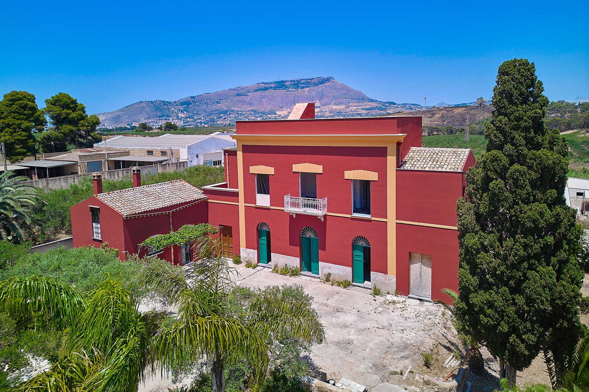

€1.090.000
Trapani · Sicily · Italy
Historic 19th-century Villa Impinna near Trapani: red noble rural villa with guesthouse, landscaped garden and private pool at €1.090.000. Western Sicily character with room to live and host.
Listed on Engel & Völkers Trapani; asking €1.090.000; 320 m² / 4 bed / 6 bath / land 3.190 m²; hasSwimmingPool true; ACTIVE. Noble rural villa confirmed in body.
Open listing